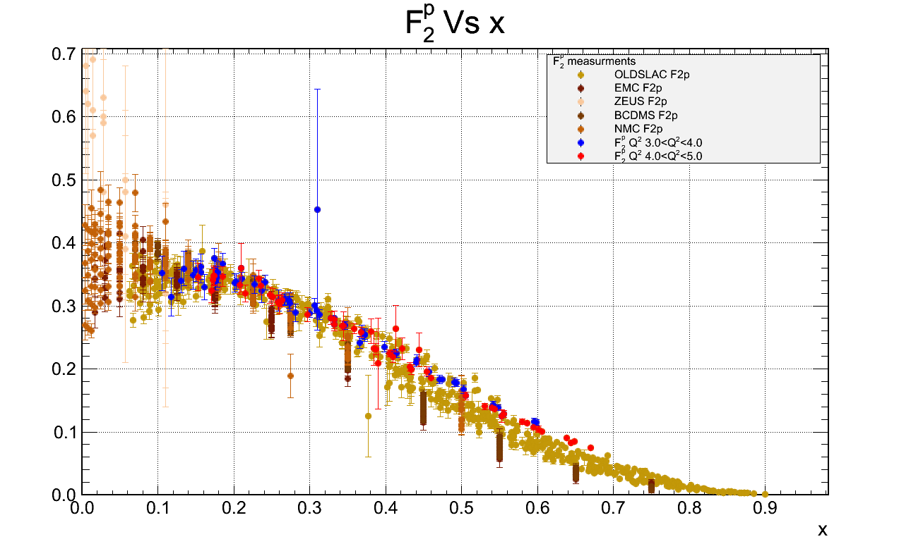

NucDB
An interface to experimental and theoretical data for nuclear and particle physics.
Class Documentation Doxygen generated
View the Project on GitHub whit2333/NucDB
Download:
Welcome to the NucDB web site.
NucDB is an attempt to easily interface and search experimental data, add data to the database, and make pretty plots. It is utilizes the ROOT libraries.
Overview
This project begain as an attempt to consolidate the world data on spin structure functions and make nice plots of them. Naturally the unpolarized structure functions were added, then virtual compton scattering asymmetries... etc.
Most of the data is from unpolarized and polarized DIS experiments but ideally this will be expanded to include many other experiments. The Durham HEP data project is a great source of data but not the only source.
Examples


{kind=link}
Authors and Contributors
- Whitney Armstrong
- Temple Univeristy Physics Dept.
Support or Contact
Having trouble compiling or installing? Contact Whitney Armstrong at whit@temple.edu.